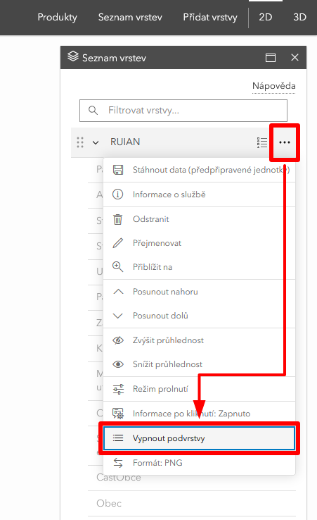

Webové mapové služby v prohlížeči
Cíle cvičení
-
seznámení s prostředím webové mapové prohlížečky ZÚ (Geoprohlížeč)
-
průzkum nabídky dat různých poskytovatelů
-
přidání mapových služeb do webové mapy geoportálu
-
extrakce informací z více vrstev ke konkrétnímu místu
-
shrnutí a interpretace získaných informací
Geoprohlížeč ČÚZK
Český úřad zeměměřický a katastrální (ČÚZK) je státní instituce spravující katastr nemovitostí. Pod tento orgán spadá Zeměměřický úřad, který má na starosti mj. správu státního mapového díla (oficiální mapy ČR) a poskytování geodetických a kartografických dat. V rámci této služby úřad poskytuje i webovou mapovou prohlížečku – tzv. Geoprohlížeč dostupný na této adrese.
Přidávání mapových služeb
Výběrem produktů ZÚ
Geoprohlížeč nabízí řadu předpřipravených skupin vrstev pro rychlejší tvorbu mapové kompozice. Nabídka se vyvolá tlačítkem Produkty. Vložená sada vrstev se objeví po kliknutí na Seznam vrstev, kde lze po rozbalení měnit viditelnost každé vrstvy zvlášť.
pozor, některé služby či skupiny vrstev mají (kvůli přehlednosti) pro každou vrstvu přednastavené hodnoty přiblížení, při kterých se zobrazí. Vrstva tak může být podle seznamu viditelná, ale nezobrazí se kvůli aktuálnímu přiblížení v mapě. Řešením je měnit přiblížení mapy, dokud se vrstva nezobrazí (zobrazené vrstvy jsou v seznamu zobrazeny černým písmem, skryté šedým písmem)

Vložením URL adresy služby
Kromě předpřipravených datových sad lze do mapy také přidávat libovolné služby z jiných zdrojů (jsou-li sdíleny v podporovaném standardu). Tomuto účelu slouží tlačítko Přidat vrstvy.

{kind=link}
{kind=link}
{kind=link}
Extrakce informací z mapy
Atributová data mapových služeb lze číst pomocí tzv. vyskakovacího okna. To se objeví po kliknutí na prvek v mapě. V případě více viditelných překrývajících se vrstev je nutné dávat pozor, ke které konkrétní vrstvě aktuální vyskakovací okno patří.
{kind=link}
Úloha
Následující úloha vás provede základními úkony v rámci webové mapové aplikace Geoprohlížeč. Pomocí přidávání vrstev (mapových služeb) a vyskakovacích oken budou zjištěny informace rýzných témat k zadaným (skutečným) bodům v ČR.
Zadání úlohy
Je zadán bod o zeměpisných souřadnicích dle individuálního zadání:
| číslo zadání | Zeměpisná šířka (° ' '') | Zeměpisná délka (° ' '') | ||||
|---|---|---|---|---|---|---|
| 1 | 50 | 37 | 38,590 | 14 | 45 | 34,261 |
| 2 | 50 | 40 | 43,046 | 13 | 57 | 19,464 |
| 3 | 50 | 52 | 34,389 | 14 | 29 | 11,485 |
| 4 | 49 | 6 | 6,627 | 16 | 13 | 27,818 |
| 5 | 50 | 41 | 33,743 | 15 | 34 | 30,465 |
S využitím webové mapové aplikace Geoprohlížeč a mapových služeb či geoportálů o zadaném bodu zjistěte:
-
příslušnost k obci a v jakém katastrálním území bod leží
- získejte URL adresu mapové služby ArcGIS REST "Mapová služba nad daty RÚIAN" z Geoportálu ČÚZK NEBO přidejte do mapy předpřipravenou sadu vrstev RÚIAN
- vložte do mapy vrstvy Obec a KatastralniUzemi NEBO vypněte viditelnost všech ostatních vrstev (1)
- jako odpověď uveďte hodnoty atributů Název obce, Kód katastrálního území a Číslo katastrálního území
-
geologické podloží pod zadaným bodem
- získejte URL adresu mapové služby ArcGIS REST "Geologická mapa 1 : 50 000 (GEOČR50)" z webu České geologické služby (záložka "Webové služby"(2)) – pozor, URL adresa mapové služby musí obsahovat klíčové slovo "rest"
- vložte do mapy vrstvu Horniny GeoČR50
- jako odpověď uveďte hodnoty atributů hornina a horninový typ
-
adresu nejbližšího adresního bodu
- získejte URL adresu mapové služby ArcGIS REST "Mapová služba nad daty RÚIAN" z Geoportálu ČÚZK NEBO přidejte do mapy předpřipravenou sadu vrstev RÚIAN
- vložte do mapy vrstvu AdresniMisto NEBO vypněte viditelnost všech ostatních vrstev (3)
- jako odpověď uveďte hodnotu atributu Adresa
-
poštovní směrovací číslo nejbližší pobočky České pošty (pouze pobočky, ne výdejní boxy apod. – zde si vyzkoušíte funkci filtrování dat)
- získejte URL adresu mapové služby WFS z tohoto odkazu (jedná se přímo o adresu služby, ne o webovou stránku)
- vrstvě nastavte filtr zobrazující pouze prvky, pro které atribut
ZKR_NAZ_FUNnabývá hodnotPodávací,Samostatná pošta Partner,Dodejna I,Dodejna IIaSamostatná dodejna(4) - jako odpověď uveďte pětimístné poštovní směrovací číslo nejbližší pobočky (hodnota atributu PSC_ADRESY)
-
k jaké změně využití území v zadaném bodě došlo mezi lety 1990 a 2018
- využijte data evropského programu Copernicus – Corine Land Cover Europe
- dostupné ze stránek Evropské agentury pro životní prostředí (EEA) či Copernicus Land Monitoring Service (CLMS)
(Ze stránek EEA či CLMS použijte mapovou službu 'REST API', resp. 'ESRI: REST', u WMS bohužel není v tomto případě možné vyčítat hodnoty atributů vrstvy) - jako odpověď uveďte kód a slovní název kategorie Land Cover pro obě období a jejich slovní porovnání
-
jaké hodnoty dosahovala v zadané lokalitě intenzita světelného znečištění v roce 2022
- získejte URL adresu mapové služby WMS Světelné zněčištění z tohoto odkazu (jedná se přímo o adresu služby, ne o webovou stránku). Poskytovatelem služby je Česká informační agentura životního prostředí (CENIA)
- jako odpověď uveďte hodnotu intenzity znečištění z rastru
-
příslušnost zadané lokality ke stavebnímu a matričnímu úřadu
- získejte URL adresu mapové služby WFS Působnost úřadů z tohoto odkazu (jedná se přímo o adresu služby, ne o webovou stránku). Poskytovatelem služby je Česká informační agentura životního prostředí (CENIA)
- jako odpověď uveďte název příslušného úřadu (pro oba typy instituce)

trik pro hromadné zapnutí/vypnutí vrstev služby
trik pro hromadné zapnutí/vypnutí vrstev služby"ZKRNAZ_FUN" IN ('Podávací','Samostatná pošta Partner','Dodejna I','Dodejna II','Samostatná dodejna')
{kind=link}